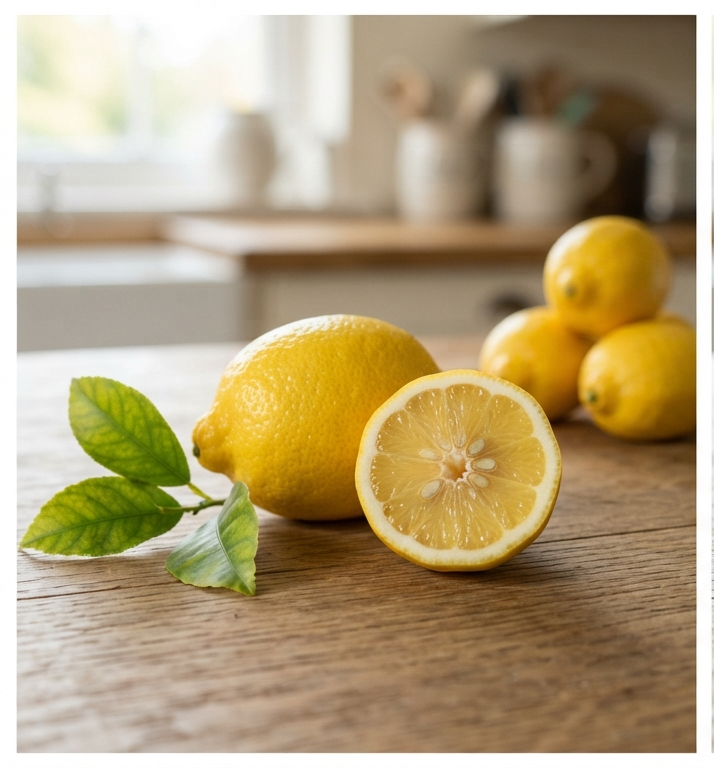

What is a Lemon?

The lemon (Citrus limon) is a globally celebrated hybrid citrus fruit. Known for its distinct ellipsoidal shape and bright yellow coloration, it serves as an essential flavor enhancer, preservative, and natural cleaner across countless global traditions.
Key Characteristics
- Taste: Sharply sour, tart, and refreshing due to high citric acid content.
- Peel: Firm, smooth-to-pebbly skin that yields aromatic zest when grated.
- Ancestry: A cultivated hybrid resulting from an ancient cross between a sour orange and a pure citron.
Popular Varieties
Several lemon varieties dominate markets worldwide:
- Eureka: The standard, dependable grocery store lemon with a prominent nipple end.
- Meyer: A smoother, rounder cross with a mandarin orange that offers a sweeter, less acidic juice.
- Lisbon: A classic, smooth-skinned lemon that produces abundant juice year-round.
Cultural Significance
Beyond its massive role in baking and cooking, the lemon is a universal symbol of freshness and cleanliness. Its oils form the base of legendary fragrances, its juice historically prevented scurvy on maritime voyages, and it remains a global household staple for wellness and natural detoxification.